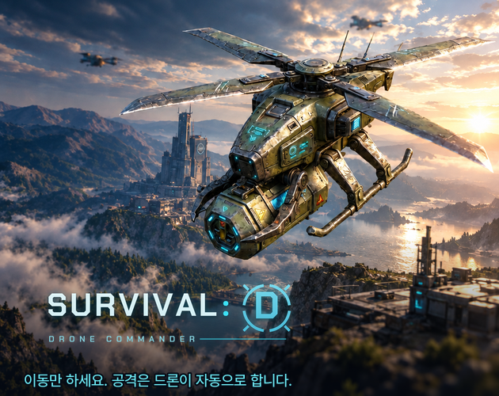

조작은 이동뿐인 단순함 위에, 판이 끝난 뒤 뽑기·강화로 성장하는 두 겹의 반복 재미를 얹었습니다.
공격은 드론이 자동으로, 선택은 플레이어가. 레벨업 3택1과 위험을 감수하는 오버드라이브로 판을 바꿉니다.
뱀서라이크를 즐기는 사람, 설치 없이 브라우저에서 한 판(10분)을 가볍게 해 보고 싶은 사람
WebGL(브라우저 실행) / 3D 쿼터뷰 생존 액션, 사이버펑크·SF

다크 남색 + 시안 UI, 위험한 것은 빨강·주황으로 구분. 배경음악 2곡(VARCO SOUND, Suno AI)과 직접 만든 효과음
Unity 6000.3(C#) → WebGL 빌드, itch.io 배포. 경제 시뮬레이터와 로그 분석기는 Python
엔지니어(주인공), 드론 5종(근접·저격·폭발·회복·수집), 로봇 5종과 엘리트, 최종 보스. 3D는 VARCO 3D로 제작
노멀 5개(외곽 순찰로 ~ 중앙 관제탑)와 노멀 클리어로 열리는 하드 1~5
5종 드론을 장착하고 5단계 강화와 변신, Lv6~8 각성으로 키웁니다. 폭발 드론은 마우스로 터질 위치를 직접 조준합니다.
5초간 공격 속도 2.5배, 대신 받는 피해 2배. 540초에 원형 경기장 보스전(내려찍기·돌진·분노)이 열리고, 보스를 쓰러뜨리면 승리합니다.
일반 뽑기(SSR 2.5%, 천장 70회·소천장 10회)와 SR을 모으는 락온 뽑기. 확률 표기는 실제 수치표와 같고, 실제 결제는 없습니다.
경제 시뮬레이터로 규칙을 모의하고, 테스트 로그와 분석기로 CBT 4명·공개 OBT 결과를 읽어 밸런스를 고칩니다.